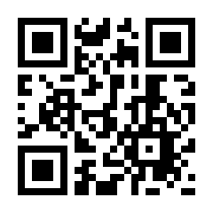

論文リスト
参考論文
Modular Primitives for High-Performance Differentiable Rendering
モジュール式の微分可能レンダラを提案
DIB-R++: Learning to Predict Lighting and Material with a Hybrid Differentiable Renderer
Albedoマップと環境マップの微分可能レンダラ
PhySG: Inverse Rendering with Spherical Gaussians for Physics-based Material Editing and Relighting
球面ガウスの学習をしています
学習用
Connecting Measured BRDFs to Analytic BRDFs by Data-Driven Diffuse-Specular Separation
Cook-Torrance GGX
目的が似ている論文
Dressi: A Hardware-Agnostic Differentiable Renderer with Reactive Shader Packing and Soft Rasterization
GET3D: A Generative Model of High Quality 3D Textured Shapes Learned from Images
Soft Rasterizer: A Differentiable Renderer for Image-based 3D Reasoning
興味のある論文
NeRF: Representing Scenes as Neural Radiance Fields for View Synthesis
注目の新技術
Instant Neural Graphics Primitives with a Multiresolution Hash Encoding
NeRfの高速化
NeRF in the Wild: Neural Radiance Fields for Unconstrained Photo Collections
建造物のNeRf
NeRF--: Neural Radiance Fields Without Known Camera Parameters
カメラの推定も行うNeRF
Rodin: A Generative Model for Sculpting 3D Digital Avatars Using Diffusion
マイクロソフトがアバター生成？
High-Resolution Image Synthesis with Latent Diffusion Models
話題のお絵かきAI
